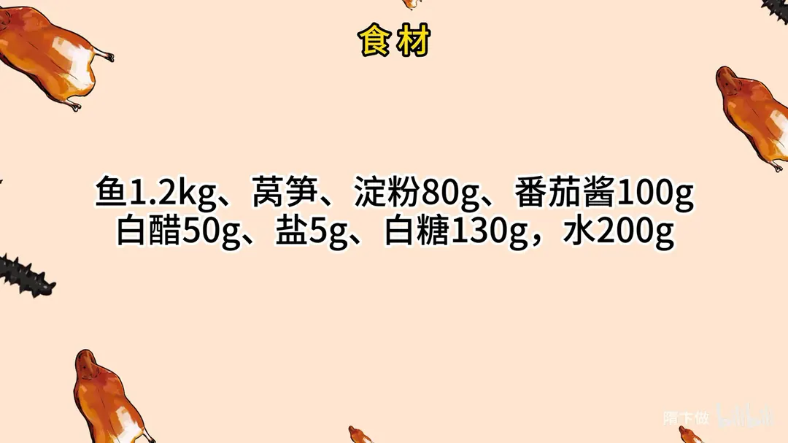
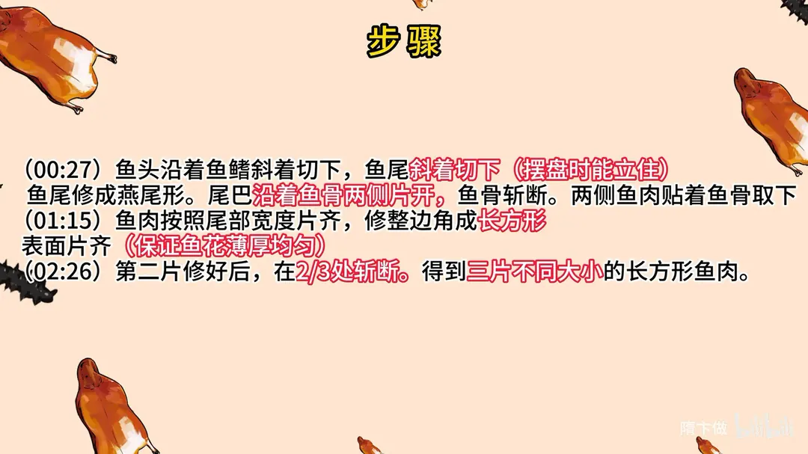
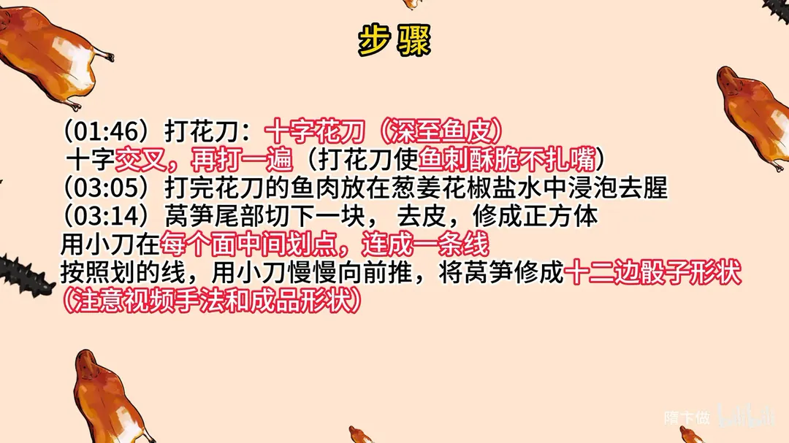
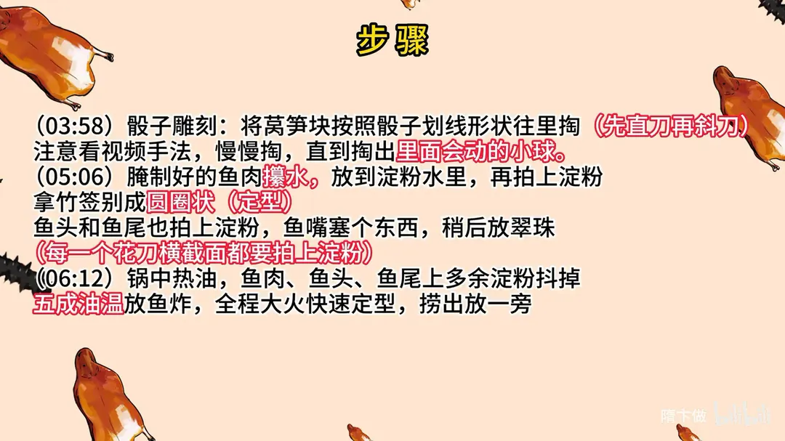
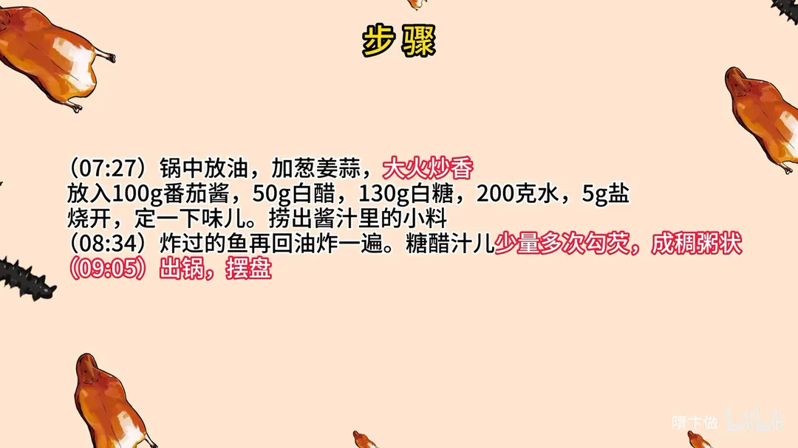

翠珠鱼花
隋卞一做。1.2kg 鱼沿鳍切下头尾、贴脊骨取肉，修成三片长方形鱼片，十字花刀深至鱼皮再交叉打一遍，葱姜花椒盐水泡去腥；五成油温大火定型。糖醋汁按番茄酱 100g、白醋 50g、白糖 130g、水 200g 熬稠；莴笋雕成十二边骰子作翠珠。
原视频：https://www.bilibili.com/video/BV1Kw411n74A
食材
鱼、莴笋、淀粉 等 8 样
| 类别 | 用料 | 用量 |
|---|---|---|
| 主料 | 鱼 | 1.2kg |
| 配料 | 莴笋 | 适量 |
| 拍粉 | 淀粉 | 80g |
| 糖醋汁 | 番茄酱 | 100g |
| 糖醋汁 | 白醋 | 50g |
| 糖醋汁 | 白糖 | 130g |
| 糖醋汁 | 水 | 200g |
| 调料 | 盐 | 5g |
步骤
- 切头尾：鱼头沿着鱼鳍斜着切下，鱼尾斜着切下，摆盘时能立住；鱼尾修成燕尾形。
- 取鱼肉：尾巴沿着鱼骨两侧片开，鱼骨斩断；两侧鱼肉贴着鱼骨取下。
- 修成长方片：鱼肉按照尾部宽度片齐，修整边角成长方形，表面片齐，保证鱼花薄厚均匀。第二片修好后，在 2/3 处斩断，得到三片不同大小的长方形鱼肉。
- 打十字花刀：打花刀，十字花刀深至鱼皮，十字交叉后再打一遍；花刀打到位，鱼刺炸后酥脆不扎嘴。
- 浸泡去腥：打完花刀的鱼肉放在葱姜花椒盐水中浸泡去腥。
- 修莴笋：莴笋尾部切下一块，去皮，修成正方体；用小刀在每个面中间划点，连成一条线；按照划的线，用小刀慢慢向前推，将莴笋修成十二边骰子形状。
- 雕翠珠：将莴笋块按照骰子划线形状往里掏，先直刀再斜刀，慢慢掏，直到掏出里面会动的小球。
- 拍粉定型：腌制好的鱼肉攥水，放到淀粉水里，再拍上淀粉；拿竹签别成圆圈状定型。鱼头和鱼尾也拍上淀粉，鱼嘴塞个东西，稍后放翠珠；每一个花刀横截面都要拍上淀粉。
- 炸鱼：锅中热油，鱼肉、鱼头、鱼尾上多余的淀粉抖掉，五成油温放鱼炸，全程大火快速定型，捞出放一旁。
- 熬糖醋汁：锅中放油，加葱姜蒜，大火炒香；放入 100g 番茄酱、50g 白醋、130g 白糖、200 克水、5g 盐烧开，定一下味儿，捞出酱汁里的小料。
- 复炸勾芡：炸过的鱼再回油炸一遍；糖醋汁少量多次勾芡，成稠状。
- 摆盘：出锅，摆盘，翠珠放入鱼嘴。
讲解要点
难度：★★★★★（刀工、雕工、油温、糖醋比全都要准，最磨人的是十字花刀要刀刀深至鱼皮）
为什么这么做
- 沿鳍斜切头尾、尾巴修成燕尾：留下鳍边的肉炸出来才挺，摆盘能立住；燕尾是这道菜的形。
- 贴脊骨取肉、去掉胸骨，按尾部宽度片齐再修成长方片：鱼片要完整无骨，宽窄一致，炸完卷起来才一样长、一样高；薄厚也得一致，薄处先焦、厚处不熟，翻花也不均。
- 第二片在 2/3 处切断：三片从大到小，摞起来才有层次，顶上那颗球大约二指宽。
- 十字花刀深至鱼皮、交叉再打一遍：刀到皮，炸时才翻得开花；草鱼的小细刺也一起切断，炸酥了就不扎嘴。
- 淀粉水打底、只拍干淀粉，不加蛋清蛋黄：蛋液炸出来颜色好看，但壳不酥——这是老师傅不说的。
- 竹签别成圈、五成油温全程大火定型：活鱼伸缩量大，不别住形状就散；低温脱粉、吸油、塌形，高温快炸才外酥里嫩，复炸一次更脆。
- 糖醋汁按番茄酱 100g、白醋 50g、白糖 130g、水 200g：糖多于醋是大酸甜口，番茄酱给色和底味，水把浓度拉开，最后少量多次勾到稠粥状。
容易翻车
- 花刀没到鱼皮，下锅不开花；切破了皮，一炸就散。
- 淀粉拍不匀，没拍到粉的横截面炸不酥。
- 油温低，脱浆、吸油、形状塌。
- 芡一次倒太多，汁发死发黏；要少量多次。
- 雕翠珠太急，一刀掏断就前功尽弃。
热评补充
- 嫌雕翠珠麻烦，可以用一颗葡萄顶在鱼嘴里代替，样子差一点，味道也过得去。
原片尾卡





原片文案
AI 字幕校准稿
上次去完淮扬菜博物馆之后，有很多人私信问我这道翠珠鱼花。这菜很少见到，它是一条鱼取两片肉，然后摞起来的，现在真想吃到很难搞了。后来在网上找了找，详细的教程很少很少，今天给你做一个完整版，把关键点都给你们讲清楚。草鱼鳃下边那个鳍往下一点，一会儿要利落的，所以要斜着切，哎，就这个样子。尾巴也斜着切下来，把尾巴修一下，修成燕尾形好看。
把鱼肉从中间鱼骨片开，中间的鱼骨去掉，一会儿要立着取鱼肉。贴着鱼骨取下鱼肉，另一片也一样；鱼骨留着它用，鱼拿过来去掉胸骨。片到和尾部相同的宽度的时候，就直接切下来，让它变成一条长条的一块肉。修一下，边边角角都切掉一层，然后再片一刀，这个刀也是为了让它薄厚均匀，是一个平面就可以了。
注意打花刀了，十字花刀深至鱼皮。刀切下去之后往旁边歪一下，这样能看到是不是打到鱼皮了。刀要准、要狠，十字交叉再打一遍。手要稳，心莫慌，先瞄准再下刀，常干这个手就熟练了，大小一致就行。
下一片取肉的方法是一样的，不一样的地方是在它三分之二处就给它切断，然后再修一下。这块是顶在上面的，那个球大约有二指宽就行了。这样草鱼里面的刺也都给它切断了——草鱼好多小细刺扎嘴，炸酥了你就可以吃了。切完以后它是可以成一个卷的，为什么刚才不把这肉修得很平呢？就是为了让它卷起来一样长。
打完花刀的鱼肉放到葱姜料酒里面，放点盐，搁这泡着，入味去腥。下一步找一根莴笋，切下来一段，去皮，去干净，这是做鱼嘴里顶的那个玲珑球。切方了之后给它画个线，在每一个边的中间画个点，连成一条线，这样做出来就比较规矩。按照画的线平着向前推，把这角削掉，这活要慢，急不得。
最后修成这种窄的形状。现在进一步雕刻，这个不是考验刀工，是考验眼力。在每个面的边缘靠里部分画出一个棱，然后用小刀把中间的部分掏空，掏完之后顺着边往里掏，把里边变成一个球，一点一点把里边的连接全部切断。让它产生空隙，中间的部分削圆变成一个球，能动的——玲珑球里边是个球。
腌制好的鱼肉攥一下水，放到淀粉水里，过完之后放到干淀粉里。这个外边不能搁蛋清或者蛋黄，放了色泽好看，但是吃着不酥脆，这也是好多大师傅不说的。每一个花刀的横截面都要拍得很均匀，拍完抖一下，看哪里还没拍到，再抓点干粉补上。
拍完之后拿竹签别一下，咱们买的是活鱼，伸缩量比较大。鱼头鱼尾也拍上淀粉，鱼嘴这还要塞个东西，让嘴张着，一会儿还得搁个球。
起锅烧油，鱼肉上多余的淀粉抖掉，油温烧到五成热下去炸，筷子顶着一点，打成一个圆圈，刚开始要保持形状，过两三秒再松手，全程开大火快速定型。好了捞出来，一会儿再复炸，鱼尾、鱼头也炸一下。
咱们做糖醋汁。锅里放油，放葱姜蒜大火炒香，放入番茄酱炒一下，加入白醋、白糖、水、盐，烧开，定个味。里面的小料捞出来，这会儿就不要它了。把炸过的鱼再回油炸一遍，糖醋汁勾芡，少量多次，稠一点，到这种稠粥状。
鱼捞出来摆盘，翠珠给它放在旁边。我有点不太舍得吃了。大酸甜口，鱼炸得很酥脆，一点小刺都吃不出来。这个菜为什么现在卖得那么少？因为现在的师傅都没见过，见过的师傅又觉得工艺比较复杂，费时费工，做的越来越少。